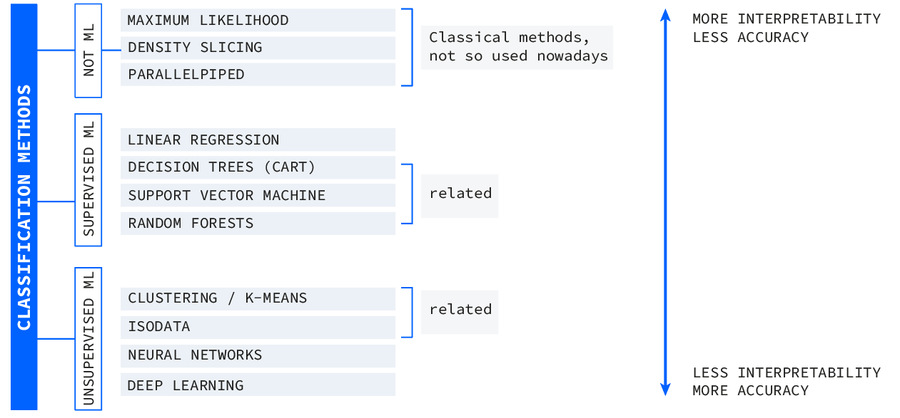
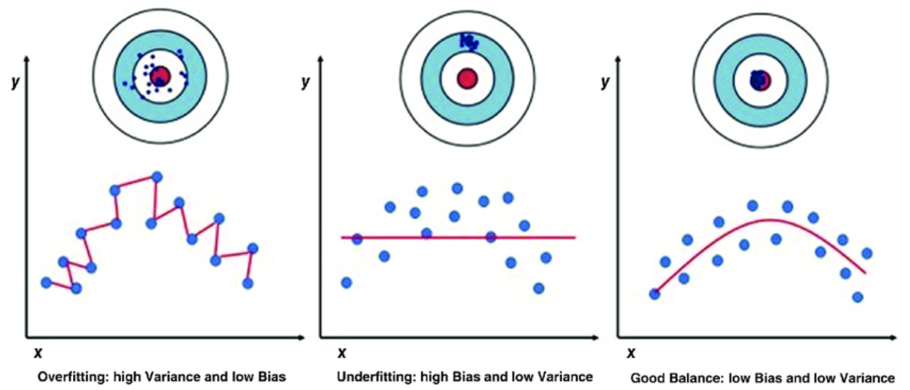
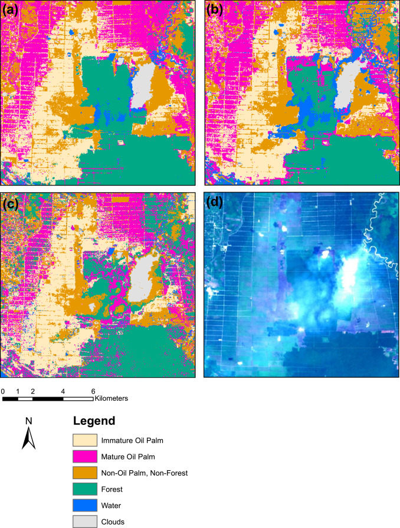
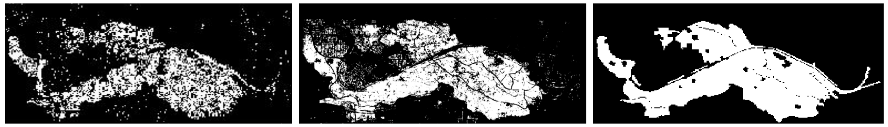

7 Classification
7.1 Summary
This week we explored machine learning techniques and reviewed some remote sensing applications for them(like mapping urban sprawl, illegal logging, and land cover classification). Most of these concepts were completely new to me, so it was a great introduction to them and all the possibilities we have. Because it was my first time hearing of some of these methods, for this week’s entry I decided to structure/categorise all the methods mentioned and include what they are and how they can be useful. Also, I organized kind of a dictionary to explain some of the main concepts that were used to talk about machine learning so I can have them for future reference.
7.1.1 Some foundational concepts:
Human learning: uses inductive learning, so given our experience of the world, we make inferences on the images or data we see
Expert system: system that uses human knowledge as a base to solve problems. Tries to show a computer how humans reach decisions
Machine learning: science of computer modeling of learning process trying to replicate inductive learning
Two schools: on one side, Traditional classifiers, they don’t apply a model, they just divide the data based on a feature space. On the other side, the newer methods use Machine Learning.
7.1.2 Classification methods
Image 1. Summary of all classification methods mentioned in class

Linear Regression: Predicts continuous values by finding the best fit between independent and dependent variables
Decision Trees (CART): Useful when linear regression assumptions don’t hold. Classification trees assign discrete categories, while regression trees predict continuous values by recursively splitting the data
Random Forests: Multiple decision trees working together, increasing accuracy but reducing interpretability. The model votes on the most likely classification, which makes it more reliable but harder to understand
Clustering/K-means: Unsupervised method, similar to DBScan, it makes clusters depending on similarities with other pixels. Useful when categories are unknown
ISODATA: Extension of K-means. Similar but has some inputs called hyperparameters
Maximum likelihood, density slicing, parallelpiped : They are more classical methods not used that much nowadays. They are supervised methods that start with a class definition, selects the training data, and applies the model to the rest of the data
Support Vector Machine SVM: Comparable to linear regression. Instead of a line there’s a hyperplane and many support vectors . This hyperplane separated two classes but allows some misclassificationndefined(soft margin). It’s a two class comparison but could be replicated for multiple classes
Neural Networks & Deep Learning: We didn’t cover these in detail, but they represent the next level, more powerful but often a “black box,” meaning high accuracy at the cost of interpretability
7.1.3 Machine learning concepts:
Overfitting: When the model fits the training data too well that makes it useless for new data. In order to avoid it we have to check for low bias (difference between predicted value and true value) and low variance (difference in accuracy between train fit and test fit)
Image 2. Bias and variance in overfitting

Train and test data: we develop the model with train data and it doesn’t see the test data. Then I use that model to predict other pixels including validating(test) pixels. With this comparison i can assess the accuracy(which we will learn more next week)
Cross-validation: same process but changing what is your train and test data each iteration. It ensures a more robust model.
Bootstrap sampling: sampling by replacement. it means some rows of data can be duplicated
Out of bag sample: rows of data not used for the random forest. It is used like a validation dataset and is useful to get the out of bag error
Supervised classification: The model learns from labeled training data to classify new data.
Unsupervised classification: The model classifies data given a method or algorithm. It has no human input and categories are not known a priori
Hyperparameters: control variables
Black box: you just know if the model is good but loose interpretability. The most accurate models usually have less interpretability.
Spatial autocorrelation: if the train and test data are too close spatially, they are probably very similar and the accuracy could be too high but the model not robust enough (overfitting)
7.2 Applications
This week, what stood out to me is how machine learning makes it possible to analyze and classify areas that might otherwise be impossible to map manually, which can be useful for governments to monitor or identify areas that require intervention but often lack resources to do so. Thinking on that, this week’s applications will be focused on examples that can help local governments monitor critical areas to improve natural resources protection and urban planning or aid distribution.
This week, what stood out to me is how machine learning makes it possible to analysis and classificy of areas that would be nearly impossible to map manually. This can be especially useful for governments to monitor and identify regions that require intervention but often lack the resources to do so. With that in mind, this week’s focus is on applications that can help local governments monitor critical areas and could potentially help natural resource protection, and urban planning or aid distribution.
7.2.1 Detecting industrial oil palm plantations on Landsat images with Google Earth Engine
This paper by Huay et al.(2016) explored how GEE could be used as a low cost, accessible tool to detect industrial oil palm plantations using Landsat 8 satellite imagery. The research focused on Tripa, Indonesia, and tested different spectral bands (RGB, NIR, SWIR, etc.) to classify land cover types like forests, water, and oil palm. Different machine learning algorithms were used and Classification and Regression Trees (CART) and Random Forests, where the ones with better performance for this task. The study also found that pixel based classification has limitations, especially in distinguishing oil palm from similar land covers, and mentioned it would be useful to improve this classification in the future using object-based classification and SAR imagery.
Overall I found this kind of research really useful as a guidance on which classification methods perform better for land use monitoring, especially useful in regions vulnerable to deforestation.
Image 1. Classification results of Classification and Regression Trees (CART) using ALL bands (a), Random Forests (RFT) using ALL bands (b), and CART using RGB bands (c) of Landsat 8 TOA image from 2014 (d).

7.2.2 Mapping Informal Settlements in Developing Countries using Machine Learning and Low Resolution Multi-spectral Data
This paper by Gram-Hansen et al.(2019) tackle the issue that most vulnerable people live in informal settlements but yet they often go unmapped, making aid allocations more difficult. So, they explored two approaches for detecting informal settlements using satellite imagery and different machine learning methods and resolutions. The first method relied on low-resolution Sentinel-2 data, where a pixel wise classifier is trained to recognize the spectral signature of informal settlements(the benefits being that it’s computationally efficient and uses freely available data). The second method, which is more resource intensive, applied Convolutional Neural Networks (CNN) to very high resolution (VHR) imagery, allowing for more detailed mapping.
What they found is that informal settlements can be effectively detected even using only lower resolution imagery, which is a great discovery for making largescale mapping more accessible, even in settings where resources are limited.
Image 2. Predictions of informal settlements in Kibera, Nairobi. Left: The CCF prediction of informal settlements in Kibera on low-resolution Sentinel-2 spectral imagery. Middle: Deep learning based prediction of informal settlements in Kibera, trained on VHR imagery. Right: The ground truth informal settlement mask for Kibera.

7.2.3 Some thoughts
Both cases prove that machine learning can map complex land cover types using satellite imagery, even with freely available data like Sentinel 2 or Landsat 8, and simpler machine learning methods, making them powerful, real time and cost effective mapping tools. I think this is a great discovery for Governments which could use these rather simple models to improve their planning and response efforts.
7.3 Reflections
This week was honestly mind blowing. Since I’m not taking the CASA06 module (which goes deeper into ML), I hadn’t really explored all the different Machine Learning and classification techniques before. This felt like a great introduction to not just to the methods themselves, but also to how they can be applied to remote sensing.
Before this, I saw Machine Learning as something super advanced and kind of out of my league. But after this class, I realized I’ve actually been using it all along (like with something as simple as Linear Regression). It’s also funny to see all the current hype around AI and ML when in reality, a lot of these models are just statistical methods that have been around for decades. That said, I also got a sense of how many more complex approaches exist, and I hope I can explore them later in more advanced applications!
One key takeaway (which also ties back to something Jon mentioned in one of the first FSDS lectures) is that just because we have all these sophisticated models available doesn’t mean we should always go for the most complex one(also as the examples above show). Sometimes, a simpler model is the better choice, especially since accuracy and complexity often come at the cost of interpretability. I think this is particularly important in areas like policy and urban planning (which is what I’m aiming to work in), where having a clear, explainable model can be more valuable than one that’s just technically precise.
Overall, this week’s content was super useful, and I’m really excited to apply it in GEE, my other modules, and even my dissertation!